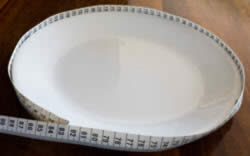
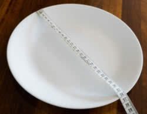

Pi (π)

Draw a circle with a diameter (all the way across the circle) of 1
Then the circumference (all the way around the circle) is 3.14159265... a number known as Pi
Pi (pronounced like "pie") is often written using the Greek symbol π
With a diameter of D the circumference is πD:

The definition of π is:
The Circumference
divided by the Diameter
of a Circle.
The circumference divided by the diameter of a circle is always π, no matter how large or small the circle is!

To help you remember what π is ... just draw this diagram.
Finding Pi Yourself
Draw a circle, or use something circular like a plate.
Measure around the edge (the circumference):

I got 82 cm
Measure across the circle (the diameter):

I got 26 cm
Divide:
82 cm / 26 cm = 3.1538...
That's pretty close to π. Maybe if I measured more accurately?
Using Pi
We can use π to find a Circumference when we know the Diameter
Circumference = π × Diameter
Example: You walk around a circle which has a diameter of 100 m, how far have you walked?

Also we can use π to find a Diameter when we know the Circumference
Diameter = Circumference / π

Example: Sam measured 94 mm around the outside of a pipe ... what's its Diameter?
Radius
The radius is half of the diameter, so we can also say:

For a circle with a radius of 1
The distance around the circle is 2 × π = 6.2831853...
Circumference = 2 × π × Radius
Formulas

We can write all this knowledge down simply like this:
- π = C / D
- C = πD
- C = 2πr
- D = C / π
Digits
π is approximately equal to:
3.14159265358979323846…
The digits go on and on with no pattern.
π has been calculated to over 100 trillion decimal places and still there's no pattern to the digits, see Pi Normal.
Approximation
A quick and easy approximation for π is 22/7
22/7 = 3.1428571...
But as you can see, 22/7 is not exactly right. In fact π isn't equal to the ratio of any two numbers, which makes it an irrational number.
A really good approximation, better than 1 part in 10 million, is:
355/113 = 3.1415929...
(think "113355", slash the middle "113/355", then flip "355/113")
Summary:
| 22/7 | = | 3.1428571... |
| 355/113 | = | 3.1415929... |
| π | = | 3.14159265... |
Remembering The Digits
I usually just remember "3.14159", but you can also count the letters of:
"May I have a large container of butter today"
3 1 4 1 5 9 2 6 5
To 100 Decimal Places
Here's π with the first 100 decimal places:
| 3.14159265358979323846264338327950288 4197169399375105820974944592307816 4062862089986280348253421170679... |
Calculating Pi
There are many methods to calculate π, here's a simple one developed by Madhava of Sangamagrama around 1360:
It goes on forever and needs a lot of calculation for just a little accuracy, but Madhava also figured out a way to correct the answer to get more accuracy.
Calculating Pi Yourself
Here's a better method you can try yourself, it is called the Nilakantha series (after an Indian mathematician who lived in the years 1444–1544).
It goes on for ever and has this pattern:
3 + 42×3×4 − 44×5×6 + 46×7×8 − 48×9×10 + ...
(Notice the + and − pattern, and also the pattern of numbers below the lines.)
It gives these results:
| Term | Result (to 12 decimals) |
|---|---|
| 1 | 3 |
| 2 | 3.166666666667 |
| 3 | 3.133333333333 |
| 4 | 3.145238095238 |
| ... | ... and so on! ... |
Get a calculator (or use a spreadsheet) and see if you can get better results.

Pi Day
Pi Day is celebrated on March 14. March is the 3rd month, so it looks like 3/14